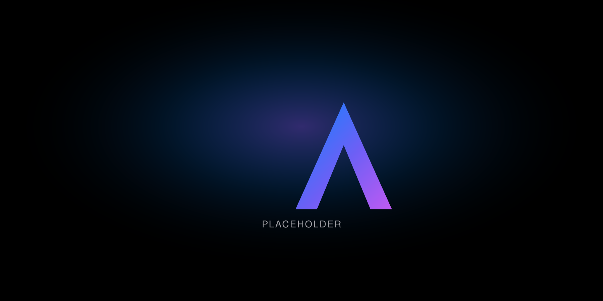

Essentials
Clear policy, a short tool inventory, and a monthly check on shadow AI and spend.
Atlas AI / Services / Fractional AI Lead
Your team already uses AI. What’s missing is one person who owns the rules, keeps an eye
on which tools you pay for, and tells you each month what’s working.
Atlas Solutions gives you a named Fractional AI Lead. Chad Keith leads every engagement
himself. We stay vendor‑neutral and work with the tools you already have.
Built for companies of about 10 to 150 people.

Who this is for
Owners and operators who want someone in charge of AI without hiring a full-time AI lead. It usually fits professional services firms, trades, healthcare‑adjacent offices, nonprofits, and growing teams that need steady oversight more than a one-time workshop.
What you get
How it works
We learn your team, your tools, and your concerns.
We agree on what the lead covers and how much time it takes each month. Scope is sized to your team and risk level.
Policy, tool inventory, approved‑tool list, and the first monthly reports. Every engagement starts with a three‑month minimum.
Month to month. Keep going, scale up or down, or stop.
Engagement sizes
Each engagement is scoped in writing. The size follows headcount and how much oversight the work needs.
Clear policy, a short tool inventory, and a monthly check on shadow AI and spend.
Policy, approved tools, pilot guidance, and monthly NIST AI RMF‑aligned reporting.
For teams of about 80 to 150, or regulated work. More time for vendor review, controls, and leadership reporting.
Credibility
Chad Keith is working toward the IAPP AIGP (AI Governance Professional) certification. Monthly reports are aligned to the NIST AI RMF. They are not a NIST certification.
Boundaries
FAQ
A part-time person who owns your AI rules, approves tools, and reports to leadership each month.
Consulting is a set project. A fractional lead is ongoing ownership.
Three months to start, then month to month.
Keep exploring
Or call 704-897-2690